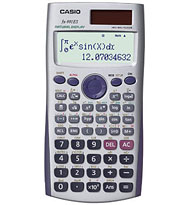

WebCal 計數機網頁
CASIO ES系列及fx-991ES簡介

CASIO ES系列計算機最特別之處是可以選用數學自然顯示 (Natural Display or Natural Textbook Display)，亦即是數值為分數或平方根等算式或符號，都可以切換 為一般教科書的排列位置、顯示形式(輸入算式及答案)，提供更加直覺式的操作介面，因此更容易了解。以下的超連為CASIO 網站的資料，有關ES系列計算機功能及數學自然顯示有詳細解釋:
數學自然顯示: http://www.casio.com.tw/support/apply/apply_2.php?id=5
ES系列計算機比較: http://www.casio.com.tw/support/apply/apply_2.php?id=21
FX-350ES: http://www.casio.com.tw/products/CAL/science/standard_science/FX-350ES
FX-82ES: http://www.casio.com.tw/products/CAL/science/standard_science/FX-82ES
FX-570ES: http://www.casio.com.tw/products/CAL/science/standard_science/FX-570ES
FX-991ES: http://www.casio.com.tw/products/CAL/science/standard_science/FX-991ES
FX-500ES: http://www.casio.com.tw/products/CAL/science/standard_science/FX-500ES
雖然ES系列計算機有不少優點，但由於使用圓點顯示形式(Dot matrix)，全部ES系列計數機均不獲香港考評局接納為准用計算機。另外自然顯示亦有本身的限制，例如平方根形式答案只可以幾個特定的形式，答案a√b的形式中的條件為1≦a<100及1<b<1000等，所以答案103√2只能以小數形式顯示，而計算的中間過程亦不可以有三項或多於三項，否則亦會以小數形式顯示答案等等。數學格式(自然顯示)輸入法按鍵數目亦較多(時常要按向上、向下及向右鍵等)，一般計算的操作效率較線性格式輸入法的慢一點，特別是習慣使線性格式的朋友(例如: MS系列及fx-3650P)，相信若無特別需要，亦多數會選用線性輸入格式。
ES系列計數機，以fx-991ES功能最好，它的功能大致上與fx-991MS差不多，不過亦有下列特別功能及不同/改善之處:
˙表格計算功能: 能夠從一個函數f(x)的算式中，顯示出對x值運算出來的f(x)值一覽表，使用上較為方便。
˙積分計算功能使用準確度較高Gauss-Kronrod近似值方法。
˙回歸分析加入了ab指數回歸計算功能。
˙統計功能可以顯示最大及最小的數值。
˙微分計算使用中央差異近似法。
˙加入總和計算Σ功能: 可以輸入f(x)表示式特定範圍，計算f(x)值的總和，因此可以不必重複計算。
˙內部使用15位數值進行計算(MS系列及fx-3650P使用12位進行運算)。
˙可以複製矩陣/向量內容到另一個矩陣/向量記憶，使矩陣/向量計算較為方便。
˙基數計算範圍，八進數與10進數及16進數同為32bits 數值系統，二進數則為16 bits數值系統(16位)，計算範圍較MS系列的二進數及八進數為大。
說明書下載:
FX-991ES (繁體中文)
FX-570ES (繁體中文)
FX-500ES (繁體中文)
FX-570ES / FX-991ES附錄 (繁體中文)
FX-82ES / 350ES附錄 (繁體中文)
FX-115ES/991ES (英文)
FX-500ES Appendix (英文)
FX-570ES Appendix (英文)
FX-82ES/83ES/85ES/ 300ES/350ES (英文)
FX-82ES/83ES/85ES/ 300ES/350ES Appendix (英文)